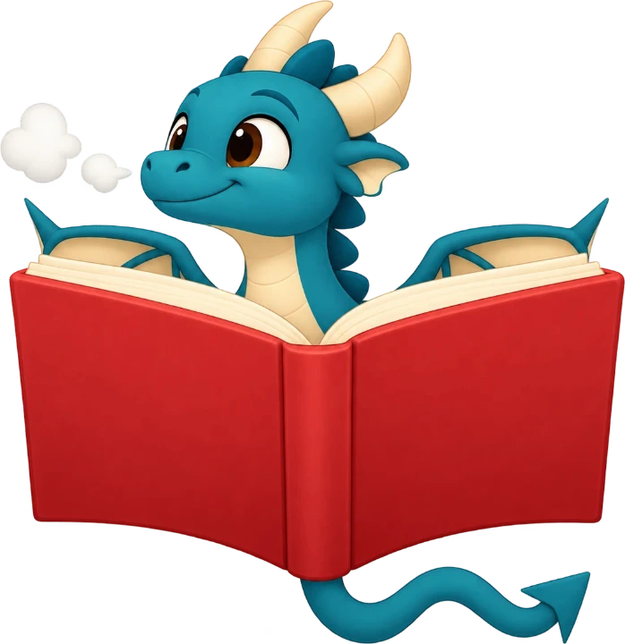

Pour l’enseignant · français, cycles 2 et 3
Ce que le projet fait travailler, en regard des programmes de français en vigueur. À gauche, ce que fait la classe. À droite, les textes officiels, cités mot pour mot.

La classe joue des livres-jeux, un format où le lecteur choisit, et repère leur genre : aventure, enquête, merveilleux. Puis elle cherche comment ils sont faits : choix, renvois, fins.
À l’oral, la classe décide de l’univers, du héros, de l’enjeu et des grandes étapes.
Chaque élève prépare son chapitre, puis écrit ses scènes en veillant à ce qu’elles s’accordent avec celles qui y mènent et celles qui suivent, sur son cahier puis sur le site.
L’élève remet sa scène ; l’enseignant la valide ou demande une reprise précise. L’élève teste son chapitre comme un lecteur.
Chaque élève écrit plusieurs scènes, qui forment avec celles des autres un livre long, que de vrais lecteurs joueront.
Lire le livre à voix haute, à sa classe ou à une autre.
Au CP, le livre s’écrit surtout à toute la classe, par la dictée à l’adulte. Au CE1 et au CE2, les élèves écrivent peu à peu leurs scènes eux-mêmes, avec l’aide de l’enseignant.
L’enseignant lit un livre-jeu à la classe, qui choisit les chemins.
À l’oral, la classe décide du héros, de ce qu’il veut et des chemins.
Au CP, les élèves dictent et l’enseignant écrit. Au CE1, ils écrivent de courts passages guidés ; au CE2, des scènes plus longues, avec plus d’autonomie.
L’enseignant relit à voix haute ; la classe repère ce qui ne va pas et améliore le texte.
Un écrit long, dirigé par l’enseignant, où chacun écrit sa part, de plus en plus seul au fil du cycle.
Lire le livre à voix haute, à sa classe ou à une autre.